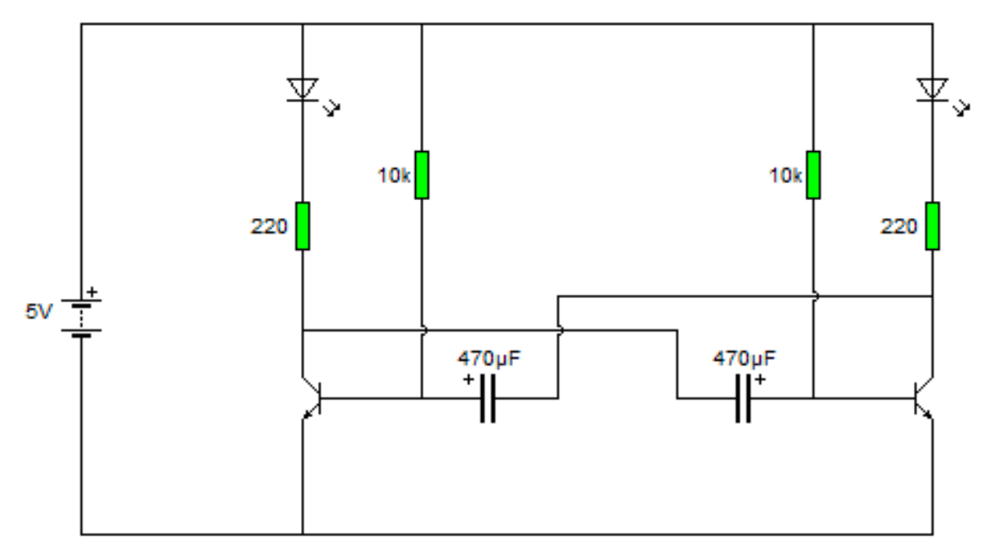
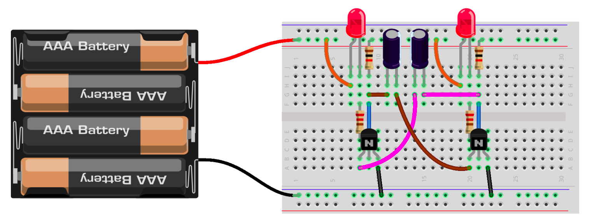
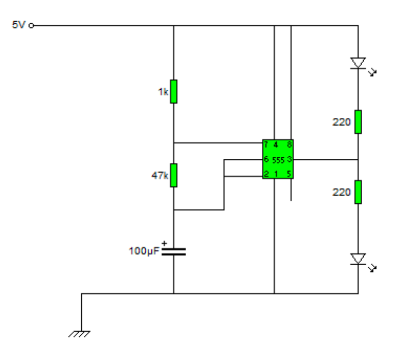
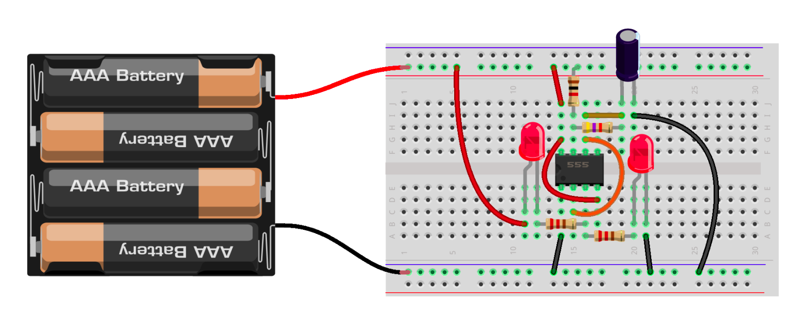

Multivibrador Astable: Intermitente con LEDs
Dos prácticas finales que generan el mismo efecto —dos LEDs parpadeando alternadamente— con dos enfoques distintos: uno con transistores discretos y otro con el circuito integrado NE555. Aprenderás a montar, medir y comparar ambos circuitos.
Entrega obligatoria
Para acreditar la materia se debe entregar la práctica final de electrónica completa (las dos prácticas presentadas en esta lección) junto con el robot del proyecto final. Ambos entregables son indispensables.
¿Qué es un Multivibrador Astable?
Un multivibrador astable es un circuito que genera una señal cuadrada de forma continua, sin necesidad de pulso externo. No tiene estados estables: oscila entre HIGH y LOW de manera indefinida mientras tenga alimentación.
Es la base de muchos circuitos prácticos: luces intermitentes, generadores de tono, relojes para circuitos digitales, moduladores PWM y, en general, cualquier sistema que necesite una base de tiempo.
Frecuencia
Determinada por los componentes RC (resistencia y capacitor) del circuito.
Forma de Onda
Señal cuadrada con dos niveles de tensión bien definidos.
Auto-oscilante
No requiere disparo externo: se realimenta a sí mismo.
Práctica Final 1 — Intermitente con Transistores
Multivibrador astable construido con dos transistores NPN.
Fundamento
Este circuito utiliza dos transistores NPN (2N2222, BC547 o similares) acoplados de forma cruzada mediante dos capacitores electrolíticos. Cuando uno de los transistores conduce, el otro está en corte, y viceversa. El capacitor se carga lentamente a través de la resistencia de base hasta que su tensión alcanza ≈0.7V (umbral VBE) y conmuta el estado de los transistores.
El resultado es que los dos LEDs se encienden alternadamente con un período controlado por los valores de R y C.
Lista de Componentes
Diagrama Esquemático
Monta el siguiente circuito. Los capacitores 470µF deben respetar su polaridad (el negativo del capacitor de la izquierda va a la base del transistor derecho, y viceversa).

Montaje en Protoboard
Esta es una vista sugerida del montaje físico. La batería de 4 pilas AAA proporciona aproximadamente 6V (totalmente compatible con el circuito).

¿Cómo Funciona Paso a Paso?
- 1. Al conectar la alimentación, uno de los transistores entra primero en saturación (por mínimas diferencias de fabricación). Supongamos que es Q1.
- 2. Q1 conduce → LED1 enciende. Su colector cae a ≈0V, lo que descarga el capacitor C1 y mantiene la base de Q2 negativa, manteniéndolo en corte.
- 3. C1 comienza a cargarse a través de R3 (10kΩ) hasta que la tensión en la base de Q2 alcanza +0.7V.
- 4. Q2 entra en saturación → LED2 enciende, Q1 queda en corte → LED1 se apaga. El proceso se invierte.
- 5. El ciclo se repite indefinidamente: LED1 → LED2 → LED1 → LED2…
Tiempo de Encendido por LED
Con R = 10 kΩ y C = 470 µF → Ton ≈ 0.693 × 10 000 × 0.000 470 ≈ 3.26 s por LED (período total ≈ 6.5 s).
Preguntas a Responder
a) ¿Qué ocurre al conectar el circuito?
Describe con tus propias palabras lo que ves: ¿qué LEDs se encienden y en qué orden?
b) ¿Cuánto tiempo está encendido cada LED?
Cronometra el tiempo aproximado de encendido de uno de los LEDs y compáralo con el valor teórico.
c) ¿Cómo puede cambiarse ese tiempo?
Pista: T = 0.693 · R · C. Si aumentas el valor de R o de C, ¿el LED estará encendido más tiempo o menos? Experimenta cambiando una resistencia de 10kΩ por una de 22kΩ o un capacitor de 470µF por uno de 220µF.
Práctica Final 2 — Intermitente con NE555
El mismo intermitente, pero usando un circuito integrado temporizador.
El Circuito Integrado NE555
El 555 es uno de los CI más famosos de la electrónica. Fabricado desde 1971, encapsula internamente comparadores, un flip-flop y un transistor de descarga, todo en un encapsulado DIP de 8 pines. Configurado en modo astable, hace exactamente lo mismo que la práctica anterior pero con menos componentes y un comportamiento mucho más estable.
Pin 1
GND
Pin 2
TRIGGER (disparo)
Pin 3
OUTPUT (salida)
Pin 4
RESET
Pin 5
CONTROL
Pin 6
THRESHOLD (umbral)
Pin 7
DISCHARGE (descarga)
Pin 8
VCC (+5V)
Al montar el 555, fíjate bien en la numeración real de los pines. El pin 1 se identifica por la muesca o el punto impreso sobre el encapsulado.
Lista de Componentes
Diagrama Esquemático
Configuración astable estándar del 555. Observa que el pin 2 (TRIGGER) y pin 6 (THRESHOLD) están unidos: es lo que vuelve al circuito auto-oscilante. La salida (pin 3) alimenta dos LEDs en configuración complementaria para que parpadeen alternadamente.

Montaje en Protoboard
El 555 se monta a caballo sobre el canal central del protoboard, de forma que los 4 pines de cada lado queden en filas separadas. Recuerda identificar el pin 1 (muesca / punto).

¿Cómo Funciona?
- 1. El capacitor C (100µF) comienza vacío. Se carga a través de RA + RB (1kΩ + 47kΩ).
- 2. Cuando la tensión en C alcanza 2/3 VCC, el comparador superior activa el flip-flop interno y la salida pasa a LOW. El pin 7 se conecta a GND y descarga el capacitor a través de RB.
- 3. Cuando la tensión cae a 1/3 VCC, el comparador inferior reinicia el flip-flop y la salida vuelve a HIGH. El ciclo se repite.
- 4. La salida (pin 3) oscila entre 0V y ≈VCC. Conectando dos LEDs en sentido opuesto, uno se enciende cuando el otro está apagado.
Fórmulas del 555 Astable
Tiempo en HIGH
Tiempo en LOW
Frecuencia
Con RA=1kΩ, RB=47kΩ y C=100µF: f ≈ 1.44 / ((1k+94k)·100µF) ≈ 0.15 Hz → un ciclo cada ≈ 6.6 segundos.
Preguntas a Responder
a) Conecta la corriente, ¿qué ocurre?
Describe la secuencia de los LEDs. ¿Es similar al circuito de la práctica anterior?
b) ¿Qué ventajas le ves a este circuito respecto al anterior?
Piensa en número de componentes, estabilidad, consumo, fiabilidad y reproducibilidad del montaje.
c) ¿Qué inconvenientes tiene respecto al circuito anterior?
¿Es más fácil de entender desde cero? ¿Requiere conocimientos previos del integrado?
d) Aplicando la ley de la práctica 7 (Ley de Ohm) y las fórmulas RC, ¿cómo cambiarías el tiempo de intermitencia?
Recuerda: tH = 0.693·(RA+RB)·C. Si quieres parpadeo más lento, ¿aumentas o disminuyes R y C? Prueba a sustituir el capacitor de 100µF por uno de 220µF y mide el cambio.
Comparativa: Transistores vs. NE555
| Aspecto | Transistores | NE555 |
|---|---|---|
| Nº de componentes | 8 (2 TR + 2 LED + 2 R + 2 C) | 6 (CI + 2 LED + 2 R + 1 C) |
| Estabilidad | Dependiente de hFE y temperatura | Muy estable, independiente de VCC |
| Valor pedagógico | Excelente — se ve "cómo funciona" | Caja negra — hay que confiar en el CI |
| Frecuencia máxima | ~kHz (limitado por TR) | ~MHz |
| Coste | Bajo (componentes discretos) | Muy bajo (CI < 10¢) |